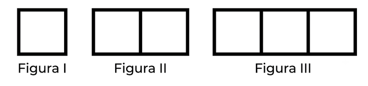
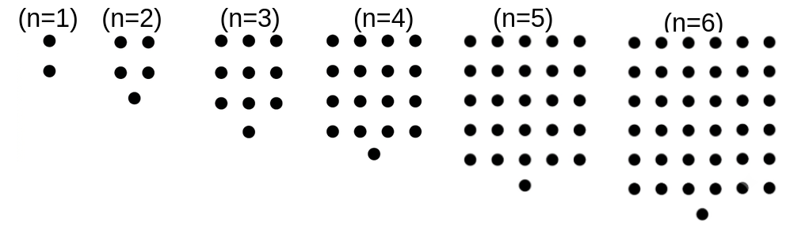

Agora qual os proximos termos da sequência \( (1, 4, 7, 10, \cdots)\), onde \(n\) é a posição de cada termo?
Observe a sequência qual seria os três próximos nùmeros?
\( (1, 4, 9, 16, 25, 36, \cdots) \)
qual a forma de calcular os próximos nùmeros?
(ENEM) Uma professora realizou uma atividade com seus alunos utilizando canudos de refrigerante para montar figuras, em que cada lado foi representado por um canudo.
A quantidade de canudos (C) de cada figura depende da quantidade de quadrados (Q) que formam cada figura. A estrutura de formação das figuras está representada a seguir.

(Prova Brasil). As figuras mostradas abaixo estão organizadas dentro de um padrão que se repete.

Um segmento de reta está dividido em duas partes na proporção áurea quando o todo está para uma das partes na mesma razão em que essa parte está para a outra.
Essa constante de proporcionalidade é comumente representada pela letra grega \(\Phi\), e seu valor é dado pela solução positiva da equação \(\Phi^2\) = \(\Phi\) + 1.
Assim como a potência \(\Phi^2\), as potências superiores de \(\Phi\) podem ser expressas da forma \(a \Phi + b\), em que a e b são inteiros positivos, como apresentado no quadro.
\(\Phi^2\)
\(\Phi^3\)
\(\Phi^4\)
\(\Phi^5\)
\(\Phi^6\)
\(\Phi^7\)
\(\Phi + 1\)
\(2\Phi +1\)
\(3\Phi +2\)
\(5\Phi +3\)
\(8\Phi +5\)
?
Uma Progressão Aritmética é uma sequência de números em que a diferença entre um termo e o seu antecessor é sempre um valor constante, chamado de razão (r).
• Exemplo: (2, 4, 6, 8, 10), onde a razão é r = 2.
• Fórmula do termo geral: \(a_n = a_1 + (n - 1) \cdot r\)
onde
\(a_1\) primeiro termo
\(a_n\) e otermo qualquer
\(n\) é a ordem numérica do termo
• Fórmula da soma dos termos: \(S_n = \frac{(a_1 + a_n) \cdot n}{2}\)
Classificação:
Crescente: quando a razão é positiva (r > 0).
• Decrescente: quando a razão é negativa (r < 0).
• Constante: quando a razão é igual a zero (r = 0).
Verifique se cada sequência dada a seguir é uma P.A. Se sim, determine a razão.
a) (25, 5, 1, 5)
b) (-17, -17, -17, -17, -17)
c) (36, 30, 24, 18, ... )
d) (10, 13, 16, 20, 24)
e) (2, 9, 16, 23, 30, ... )
(UFRGS) Em uma Progressão Aritmética, em que o primeiro termo é 23 e a razão é - 6, a posição ocupada pelo elemento - 13 é:
Quantos múltiplos de 4 com 2 algarismos existem?
Quantos múltiplos de 4 com 3 algarismos existem?
(DESAFIO) Qual a soma de todos os numeros de 1 a 99?